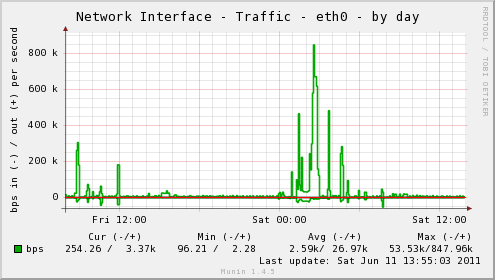
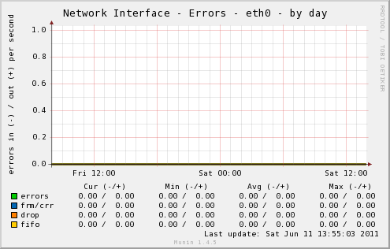

The multigraph plugin implements the following graphs:
The plugin permits the generation of the traffic and error graphs for multiple network interfaces by running the script once instead of executing plugin scripts for each graph for every interface. All interfaces except lo are graphed by default.
|  |  |
| Variable | Description |
|---|---|
| include_ifaces | Comma separated list of network interfaces to include in
graphs. (All Network Interfaces are monitored by default.) |
| exclude_ifaces | Comma separated list of network interfaces to exclude from graphs. |
| include_graphs | Comma separated list of enabled graphs. (All graphs enabled by default.) |
| exclude_graphs | Comma separated list of disabled graphs. |